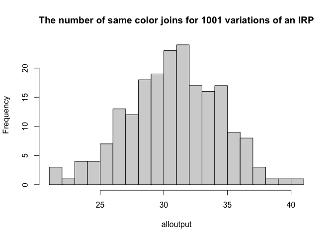

Lab 5: Autocorrelation
GEOG-364 - Spatial Analysis
Welcome to Lab 5!
The aim of this lab is to work on autocorrelation, especially join counts and census data. By the end of the lab you will be able to:
- Create a matrix of data
- Conduct a join counts analysis on “toy data”
- Download census data and conduct a real life analysis
Assignment 5 is due by midnight the night before your next lab on Canvas. Your job is to submit the requirements on this page.
See your canvas assignment here.
Need help? Add a screenshot/question to the discussion board here: LAB 5 DISCUSSION BOARD
A: Set up the lab
A1: Sign up for Census API
You can easily access US census data within R, but you need to sign up in advance for a password.
https://api.census.gov/data/key_signup.html
You can use Penn State as the organisation. This is just you promising that you will follow the terms and conditions when using this data. In a few minutes, e-mail you a personal access code. Click the link in the e-mail to activate.
A2: Create your lab project
Follow the instructions in Labs 1-4 to create your project file and a blank markdown document. e.g.
Open R-Studio. Create a new R-Project in your GEOG-364 folder called
GEOG364_Lab5_PROJECT.Make a copy of the lab template Rmd file and move it into your project folder.
DOUBLE CLICK ON THE GEOG364_Lab5_PROJECT.RPROJ FILE IN YOUR PROJECT FOLDER TO OPEN R.
Click on your lab 5 .Rmd file in the files tab to open the script
(You should not have to search if you are in your Lab 5 project):- Change the title to Lab 5.
- Change the theme if you like or add in any other features
- Remember you can edit your lab in the “editor” mode by clicking on the A at the top right
- Change the title to Lab 5.
IN THE CONSOLE (OR BY CLICKING THE INSTALL BUTTON IN THE PACKAGES TAB), install the
VIMpackage. DO NOT PUT THE CODE IN YOUR SCRIPT OR IT WILL TRY TO DOWNLOAD EVERY TIME YOU PRESS KNIT (For more instructions, see Tutorial 2: Package Install)
A3: Libraries and the top code chunk
Let’s continue to make our code more professional. There is rarely a reason to show a reader the libraries being loaded. So this time, let’s add in the libraries into the top code chunk.
Edit your code chunk that looks like this

and turn it into this, which should disappear when you press knit.

Feel free to also update this in your code template - then as you need libraries (e.g. if you run your code and it’s missing a library, you can then proactively just add it into this code chunk)
B: New R coding
B1: Custom commands: Functions
We don’t need to just rely on commands that others provide. We can also create our own, as you will see later on. You will not be asked to make your own in this class, but it is a useful skill and you could consider making and running a mini function as your “show me something new”.
Here is a good overview of functions where they make a custom command to turn Celcius into Farenheit: - https://swcarpentry.github.io/r-novice-inflammation/02-func-R/
B2: Asking Questions: If statements
Sometimes we only want R to do something if something else happens. e.g. run this command if I want to see the output, or run another command if our result is greater than 10. The if statement allows us to do this.
if(a > b){ do output commands }else{ do something else }
You can read this like a sentence e.g. “if a is greater than b, do the output commands in the first bit, else do the other stuff.”
Again, you will not be asked to make your own in this class, but it is a useful skill and you could consider making if statements as your “show me something new”.
Here is a good overview of if-else - https://www.datamentor.io/r-programming/if-else-statement/
C: Join Counts
We will first explore the theory, then create a toy dataset, then manually run a hyothesis test, then auto-create one.
C1: Join Counts theory
Join count statistics are valuable autocorrelation statistics in understanding spatial dependencies amongst binary or categorical data.
- Step 1:
DO NOT SKIP THIS STEP! Go to Canvas and read the pdf on join counts from canvas (chapter 15.1 of the textbook) - it’s only 4 pages but provides crucial background.
- Step 2:
In your code, create a new heading called Join Counts. Briefly explain what join counts are and why it is only appropriate to use use them for categorical or binary data (yes/no ; TRUE/FALSE). Feel free to use pictures/examples etc to help you explain it.
C2: Join Counts coding
This section focuses on using R to calculate join count statistics using a toy dataset. We will:
- C2a: Create a test “toy” dataset (note normally you would read your own data in from file)
- C2b: Create a spatial weights matrix using spdep
- C2c: Manually understand what we are doing in a join counts analysis.
- C2d: Formally set up a hypothesis test
- C2d: Use the
joincount.testcommand to automatically calculate it.
C2a. Create the test dataset
Let’s work on a “toy” (tiny/easy/made-up) dataset. Here’s a picture of the grid we are going to make. In this case, each polygon is a simple grid cell.

As we are making up imaginary data, we need to create it in R. Now, I will create this in R using a new type of data called a matrix. This is simply a grid of numbers (see data camp intro R for more details: https://www.datacamp.com/community/tutorials/matrices-in-r)
row.1 <- rep(1,6)
row.2 <- c(0,1,1,1,1,1)
row.3 <- c(rep(0,5),1)
row.4 <- rep(0,6)
row.5 <- c(0,0,0,1,0,0)
row.6 <- rep(0,6)
ToyA_matrix <- matrix(c(row.1, row.2, row.3, row.4, row.5, row.6),
nrow=6,ncol=6, byrow=TRUE)
ToyA_matrix## [,1] [,2] [,3] [,4] [,5] [,6]
## [1,] 1 1 1 1 1 1
## [2,] 0 1 1 1 1 1
## [3,] 0 0 0 0 0 1
## [4,] 0 0 0 0 0 0
## [5,] 0 0 0 1 0 0
## [6,] 0 0 0 0 0 0We then convert it to spatial data using the raster command - and then make a plot with a title:
ToyA_raster <- raster(ToyA_matrix)
plot(ToyA_raster)
text(coordinates(ToyA_raster), labels=ToyA_raster[], cex=1.5)
- Step 3:
Explain in your lab answers what therep()andc()commands do. Feel free to use code examples!
- Step 4:
Use the code above to create your own matrix that you assign to a variable called calledToyB_matrix.
You should create your grid to generally have negative spatial autocorrelation, but still include a little bit of randomness.
Your grid could also have additional rows and column as you desire.
All the way through my example, I use ToyA_… for my variable names. e.g. ToyA_raster, ToyA_matrix Name yours ToyB_… to keep your code neat
C2b. Creating a spatial weights matrix
Now, we will convert our dataset to a specifica type of spatial data (spdep), so that we can determine which grid-cells are “nearby” and create a spatial weights matrix. To find adjacent polygons, we can use package ‘spdep’.
First, we covert our raster data to a spatial polygon using
rasterToPolygonsandSpatialPolygonsThen we use the
poly2nbcommand to build a list of neighbors based on adjacency (queens or rooks)Calculate the weights matrix. In this case we use a binary (B) criteria, i.e. there is adjacency (1) or there is no adjacency (0).
And plot.
Here’s the code:
# Step 1 - turn to polygon
ToyA_polygon <- rasterToPolygons(ToyA_raster, dissolve=FALSE)
ToyA_spdep <- SpatialPolygons(ToyA_polygon@polygons)
# Step 2 - Make list of neighbors
ToyA_nb.rook <- poly2nb(ToyA_spdep, queen = FALSE)
# Step 3 - Create weights matrix
ToyA_weights.rook <- nb2listw(ToyA_nb.rook, style='B')
# Step 4 - plot the neighbors
plot(ToyA_spdep, border='blue')
plot(ToyA_nb.rook, coordinates(ToyA_spdep), col='red', lwd=2, add=TRUE)
- Step 5:
In your answer, make a sub-heading called Spatial weights matrix. Explain what a spatial-weights-matrix is, how adjacency can been used to create one (e.g. what are queens/rooks) or how distance might be used to create one (lecture 8A, Lecture 7B). **
- Step 6:
Use the code above to create a spatial weights matrix forToyB_matrix.
Use a queen’s weights matrix in your example
- Step 7:
Explain why your Queens adjacecy plot for the Toy_B data looks identical to my Rooks adjacecy plot for the Toy_A data.
C2c. Conduct a join count analysis manually
Sometimes this process can feel like a blackbox
Now, everything is set for the analyses: I have my spatial data (ToyA_polygon), which shows our pattern of green/white grid cells, plus our spatial weights matrix saved as variable ToyA_weights.rook.
We can now conduct a join counts test to evaluate the presence of absence of spatial autocorrelation. As described in the textbook, essentially we are looking at the boundaries between polygons are the same color (e.g. two green polygons next to each other, two white polygons next to each other), which suggests clustering, or whether there are lots of green-white boundaries, suggesting a chessboard effect/negative autocorrelation.
We can theoretically calculate (on average) how many green-green, white-white, green-white boundaries there would be if an Independent Random Process caused the pattern.
For example, here is how I would use an Independent Random Process to create the a matrix of the same shape but filled with random 1s and 0s. I’m using the “function” command to make a custom command that I am calling toyIRP.
toyIRP <- function(nrow=6,ncolumn=6, silent=FALSE){
#---------------------------------------------------------------------------
# create X random numbers between 0 and 1 (runif, = random uniform generator)
# use the round function to turn them into either a 0 (< 0.5) or a 1 (>= 0.5)
# X is the number of cells e.g. 6 rows and 6 columns makes 36 pieces of data
#---------------------------------------------------------------------------
randomnumbers <- runif(nrow*ncolumn,0,1)
randombinary <- round(randomnumbers)
#---------------------------------------------------------------------------
# Turn into a matrix and create the weights etc.
#---------------------------------------------------------------------------
IRP_matrix <- matrix(randombinary, nrow=nrow,ncol=ncolumn, byrow=TRUE)
IRP_raster <- raster(IRP_matrix)
IRP_polygon <- rasterToPolygons(IRP_raster, dissolve=FALSE)
IRP_spdep <- SpatialPolygons(IRP_polygon@polygons)
IRP_nb.rook <- poly2nb(IRP_spdep, queen = FALSE)
IRP_weights.rook <- nb2listw(IRP_nb.rook, style='B')
IRB_jointest <- joincount.test(fx = as.factor(IRP_polygon$layer), listw = IRP_weights.rook)
ww_gg_joincount <- IRB_jointest[[1]]$estimate[1]+ IRB_jointest[[2]]$estimate[1]
# If you want to see the output (e.g. silent=FALSE) then plot
if(silent == FALSE){
plot(IRP_raster,
main = list(paste("Number of same color (WW or GG) boundaries = ",ww_gg_joincount),cex=.9))
text(coordinates(IRP_raster), labels=IRP_raster[], cex=1.5)
}
return(ww_gg_joincount)
}Step 8:
Create a new code chunk and copy the code above into your script. When you press run, nothing should happen, but you will see a new “function” appear in your Environment quadrant/tab.Step 9:
In a new code chunk, copy this code and run. It should make a random pattern that tells you the numbers of same-color joins. Run it again, and again.. keep going and get a sense for how an IRP created process looks and the number of same-color joins each time,
If you are confused, To fully understand, try editing the nunmber of rows and columns to make a mini one e.g. try 2 rows and 2 columns and you can count white-white and green-green boundaries manually
output <- toyIRP(nrow=6,ncolumn=6, silent=FALSE)
- Step 10:
On average, if an IRP really did cause the pattern for a 6x6 matrix, how many same-colorjoins would you expect to see? Why does the number change each time you run it?
- Step 11:
Now, let’s run the code many times (1001 times!), store the number of same color joins each time and make a histogram of the output. Copy/run the code below, I have turned the plotting off. It is running the command 1000 times, so it might take a minute.
# Run once
alloutput <- toyIRP(nrow=6,ncolumn=6, silent=TRUE)
# Repeat 200 times and add in the answer
for(n in 1:1000){
newIRP <- toyIRP(nrow=6,ncolumn=6, silent=TRUE)
alloutput <- c(alloutput, newIRP)
}
#make a histogram of all the white-white joins
hist(alloutput, br=20, main="The number of same color joins for 1001 variations of an IRP")
- Step 12:
Given this output, what is your new expectation of the number of same-color joins if an IRP caused the process?
What we just did above is called a Monte-Carlo process. We repeated something many times and looked to see our range of outcomes. This can be very powerful as it can allow you do deal with things like edge effects. But as you saw from your readings, in this case, we could have theoretically calculated the number of joins if an IRP caused the pattern, using this equation. Note, it doesn’t mean that an IRP will ALWAYS cause the “expected number”, this equation just calcuates the mean of the histogram.

- Step 12:
Using this equation, if you have a 6x6 grid, how many same colour joins would you theoretically expect (hint, it would be the total number of joins minus E_BW)
Now let’s compare against our data. We can run the same command on our Toy dataset A to see how many white-white joins there are. As you can see, the number of white-white boundaries is 48, which would be very unusually high considering histogram of outputs from the Independent Random Process. So this suggests maybe the data is clustered e.g. there are an unusual amount of greens polygons touching green polygons and whites touching whites.
# run the command
ToyA_jointest <- joincount.test(fx = as.factor(ToyA_polygon$layer),
listw = ToyA_weights.rook,
alternative = "greater")
numberboundaries <- ToyA_jointest[[1]]$estimate[1]+ ToyA_jointest[[2]]$estimate[1]
# and plot
plot(ToyA_raster, main = paste("TOYA: Number of same color boundaries =",numberboundaries))
text(coordinates(ToyA_raster), labels=ToyA_raster[], cex=1.5)
- Step 13:
Repeat the code above but edit for your matrix (ToyB). Comparing against the histogram, is the number of white-white boundaries unusally high/low?? Does this suggest your data is unusually clustered/uniform compared to one created by an IRP?
C2d. Formally set up a hypothesis test
That process above, where we choose a process we understand and then see whether our results are unusual compared to it, that is literally all a hyothesis test is!!
The steps are:
- Choose a process to compare against (in our case an IRP caused the data)
- Think of a thing you can compare (in our case, the number of same-color joins)
- Either manually repeat your process a few thousand times and record that thing (our histogram).. OR theoretically calculate what you might expect.
- Calculate the same thing for our actual observed data
- Use a test statistic to asses how unusual our is (because the histogram is a probability density function, we can use a z-score here.)
And here is the summary you often see as the record of that process (note, its often unspoken that an IRP causes H0, you don’t have to use one which is why I’m being specific)
Join Count Summary from the McGrew textbook, O_BW is the observed black-white joins, E_BW is the expected from an IRP
We often don’t want to manually repeat the previous section. So here’s how to set up the test. Rather than looking at “same color” or “different color”, the R code likes to look at “white-white” joins individually so we will use that.
NOTE - WE CAN NEVER TEST IF OUR PATTERN IS “CLUSTERED”, BUT WE CAN TEST HOW UNUSUAL IT IS TO ONE WHERE SPATIAL DEPENDENCE DOESN’T EXIST.
Null hypothesis, H0 : What process are you comparing against?
Here we are suggesting that our pattern is caused by an Independent Random Process.
Although the default code is set to test against an IRP generated pattern, you don’t have to use one - e.g. you could manually test if pattern is more/less clustered than one caused by some other process that you care about like distance to a power station.
So if we wanted to test simply whether our pattern was simply different to an IRP:
- H0: An Independent Random Process is causing the pattern (e.g. our observation could be just another one of those 1000 runs that made the histogram)
So the number of Observed “white-white” joins (OWW) is no different than what you would expect from a pattern caused by an Independent Random Process (EWW):
OWW = EWW.
Alternative hypothesis, H1
This part is what we are comparing against.This could be one of three things, depending on the direction of our test:
- H1 : Our pattern is different than we would expect from one caused by an IRP e.g. it’s EITHER unusually clustered or uniform (“2 tailed test”)
So we’re saying this pattern is unusual given our guess at the process causing it: : OWW != EWW
(!= means not equal)
or..
- H1 :Our pattern is unusually clustered compared to one caused by an IRP, so the number of Observed “same color” joins (OWhite-White) is higher than what you would expect from a pattern caused by an Independent Random Process: OWW > EWW
or…
- H1 :Our pattern is unusually uniform/dispersed compared to one caused by an IRP, so the number of Observed “same color” joins (OWhite-White) is less than what you would expect from a pattern caused by an Independent Random Process: OWW < EWW
Example
If I wanted to see if my ToyA matrix was simply usual to one compared to an IRP, here are my H0 and H1:
H0: An Independent Random Process is causing the pattern in ToyA.
The number of Observed “white-white” joins (OWW) is no different than what you would expect from a pattern caused by an Independent Random Process (EWW):
OWW = EWW.H1 : The pattern in ToyA is different than what we would expect from one caused by an IRP e.g. it’s EITHER unusually clustered or uniform (“2 tailed test”):
OWW != EWW
- Step 14:
Write your H0 and H1 to test whether your pattern in ToyB is unusually clustered compared to one caused by an IRP (e.g. does it exhibit unusual levels of positive autocorrelation)
Test statistic
We now need a way to formally compare our observed and expected number of white-white borders. The way we are going to do this is to assume that the histogram we made earlier comes from a normal distribution. Then we can simply use a z-score to look at the probability of getting that value (see homework 2).
R will do all the hard work for us. In the command below, fx is the data itself, listw is what we count as a “neighbour” (e.g. our spatial weights matrix, what pairs of boundaries to compare) and alternative is whether you want to test if something is more clustered (“greater”), more uniform (“less”) or simply different (“two.sided”).
For my ToyA_jointest:
ToyA_jointest <- joincount.test(fx = as.factor(ToyA_polygon$layer),
listw = ToyA_weights.rook,
alternative = "two.sided") joincount.test actually does two tests (white-white) and (green-green), so we use double square brackets [[ ]] to show the first and second test separately:
# White-to-white Join counts
ToyA_jointest[[1]]##
## Join count test under nonfree sampling
##
## data: as.factor(ToyA_polygon$layer)
## weights: ToyA_weights.rook
##
## Std. deviate for 0 = 4.1544, p-value = 3.262e-05
## alternative hypothesis: two.sided
## sample estimates:
## Same colour statistic Expectation Variance
## 33.000000 24.095238 4.594478Here’s how this looks on our histogram:
We can see that there are many more white-white joins / green-green joins than you might expect. In fact, looking at the low p-value, we can see that it is very unusual to see so many same-color joins, so in this case, most people can can safely reject the null hypothesis.
C. Interpretation
How many white-to-white joins were observed vs expected in the example above? How many green-to-green joins were observed vs expected? What does that mean in terms of the spatial autocorrelation of the field and why? [4 marks]
Do you accept or reject your null hypothesis? [4 marks]
C1. Real life interpretation
In 2010, Staudt et al, published a paper on the foraging behaviour and territoriality of the strawberry poison frog (Oophaga pumilio). Twelve male frogs in Hitoy Cerere, Costa Rica, were observed each for a full day. Calling time, feeding attempts and time spent inside and outside the core area of their territories were recorded.

The strawberry poison frog
The connectivity of grids where frogs were observed feeding in the main foraging time was analysed with “Joins Count Statistics”, which tests whether the spatial connection of grids differed from a random spatial distribution. The test counts the number of connected grids in a binary system; in this case a “foraging grid” is marked black and a “non-foraging grid” is marked white. The results indicate whether or not frogs favour special areas (patches) in their territories for prey hunting. If they search in patches, there should be more connections between black-black grids and fewer connections between black-white grids than in a random distribution.
Each 4 m2 core area was divided in 100 20 × 20 cm2 grids. B (black) = grid in which was hunted. W (white) = grid in which was not hunted. The Join Count results for two frogs are as follows:
Frog question 1
The paper did not provide a map of how the territories looked - if you had to choose one of the maps below, which is most likely? Why?

Frog question 2
At a significance value of 0.01, do these results indicate that the frogs preferred hunting prey in specific patches of their core areas? Or is there no evidence to reject the notion that they randomly hunted whereever they hopped?
E. Above and beyond
Remember that an A is 93%, so you can ignore this section and still easily get an A. But here is your time to shine. Also, if you are struggling in another part of the lab, you can use this to gain back points.
To get the final 4 marks in the lab, you need to show me something new, e.g. you need to go above and beyond the lab questions in some way.
- You get 2/4 for doing something new in any way (including the Wilks Shapiro or step 24)
- You get 4/4 for something really impressive or 3+ small things.
Please tell us in your R script what you did!
F. Submitting your Lab
Remember to save your work throughout and to spell check your writing (left of the knit button). Now, press the knit button again. If you have not made any mistakes in the code then R should create a html file in your lab 4 folder which includes your answers. If you look at your lab 4 folder, you should see this there - complete with a very recent time-stamp.
In that folder, double click on the html file. This will open it in your browser. CHECK THAT THIS IS WHAT YOU WANT TO SUBMIT
Now go to Canvas and submit BOTH your html and your .Rmd file in Lab 4.
Lab 5 submission check-list
For all answers: Full marks = everything down at a high standard, in full sentences as appropriate with no parts of your answer missing. Imagine it as an example I use in class
HTML FILE SUBMISSION - 5 marks
RMD CODE SUBMISSION - 5 marks
MARKDOWN/CODE STYLE - 16 MARKS
Your code and document is neat and easy to read. LOOK AT YOUR HTML FILE IN YOUR WEB-BROWSER BEFORE YOU SUBMIT.You have written in full sentences, it is clear what your answers are referring to. YOU HAVE USED THE SPELL CHECK. SPELLING ERRORS LOSE YOU MARKS.
Above and beyond: 4 MARKS
You get 2/4 for doing something new in any way and 4/4 for something really impressive or multiple small things.
[100 marks total]
Overall, here is what your lab should correspond to:
| Grade | % Mark | Rubric |
|---|---|---|
| A* | 98-100 | Exceptional. Not only was it near perfect, but the graders learned something. THIS IS HARD TO GET. |
| NA | 96+ | You went above and beyond |
| A | 93+: | Everything asked for with high quality. Class example |
| A- | 90+ | The odd minor mistake, All code done but not written up in full sentences etc. A little less care |
| B+ | 87+ | More minor mistakes. Things like missing units, getting the odd question wrong, no workings shown |
| B | 83+ | Solid work but the odd larger mistake or missing answer. Completely misinterpreted something, that type of thing |
| B- | 80+ | Starting to miss entire/questions sections, or multiple larger mistakes. Still a solid attempt. |
| C+ | 77+ | You made a good effort and did some things well, but there were a lot of problems. (e.g. you wrote up the text well, but messed up the code) |
| C | 70+ | It’s clear you tried and learned something. Just attending labs will get you this much as we can help you get to this stage |
| D | 60+ | You attempt the lab and submit something. Not clear you put in much effort or you had real issues |
| F | 0+ | Didn’t submit, or incredibly limited attempt. |
Website created and maintained by Helen Greatrex. Website template by Noli Brazil